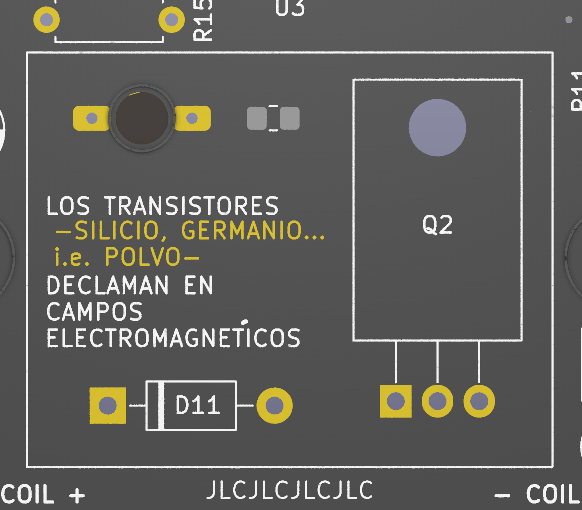

Transistores declaman...
2025

Circuito activador de sistema iman-bobina en base a circuito de compuertas NAND y 555 en modo
monostable
También utilizada en obra "Transistores en
tránsito" (MAC, 2025), controlando bobinas suspendidas en la pared

Especificaciones:
Control de frecuencia de 3 osciladores por medio de trimpots
Visualización de estados por medio de LEDS
Poesía basada en Jussi Parikka

Documentación
GitHub Esquemático BOM